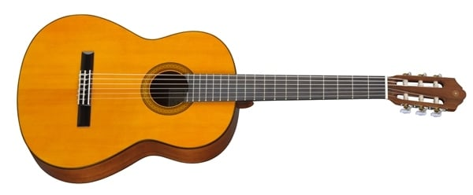
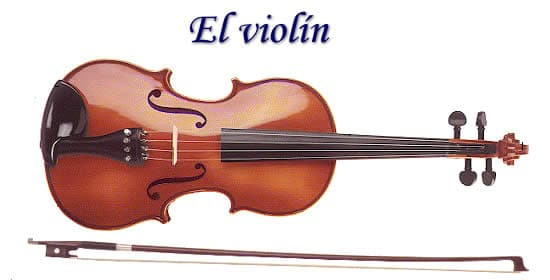

🎹 Piano
Instrumento de cuerda percutida con teclado. Ideal para música clásica, jazz y pop.

🎸 Guitarra
Instrumento de cuerda pulsada muy utilizado en géneros como flamenco, rock y folk.

🎻 Violín
Instrumento de cuerda frotada con un sonido agudo y expresivo. Muy presente en orquestas.